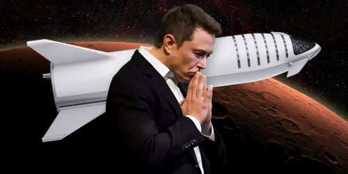
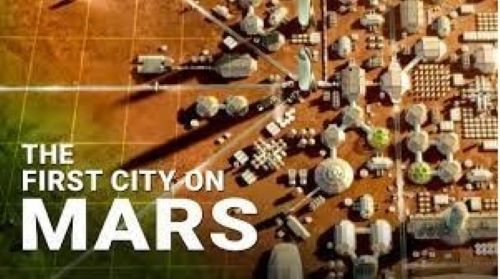
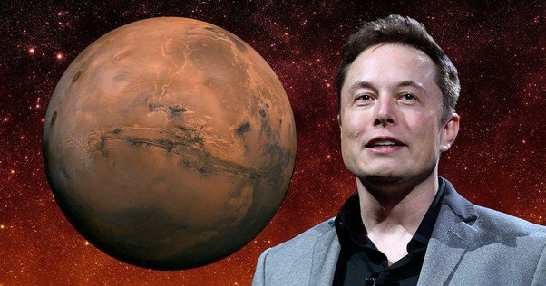

ELON MUSK
A MAN'S VISION TO CHANGE THE WORLD

Elon Reeve Musk (born June 28, 1971) is a businessman and investor. Musk is the founder, chairman, CEO and chief technology officer of SpaceX,angel investor, CEO, product architect and former chairman of Tesla, Inc.owner, chairman and CTO of X Corp. founder of the Boring Company and xAI, co-founder of Neuralink and OpenAI and president of the Musk Foundation.
What is Elon Musk known for?
Elon Musk is an engineer, entrepreneur, philanthropist, businessman and investor. Musk is The man who behind SpaceX, Tesla, SolarCity, OpenAI,and TheBoring Company.Moreover, those are only small pieces of his grand-scale puzzle that leads to a better future and the colonization of Mars.
Some Future Timelines of Elon Musk
2024 : Blast people on the first human voyage to Mars.
2025 : Put boots on Mars. 
Perhaps the 2030s : Construction of the first city on Mars. 
2100s onward : Terraform Mars into an Earth-like planet. 
What is Elon Musk's net worth?
Bloomberg and Forbes rank him as the world's richest person, estimating his net worth to be between $198bn (£162bn) and $220bn (£180bn), as of November 2023.